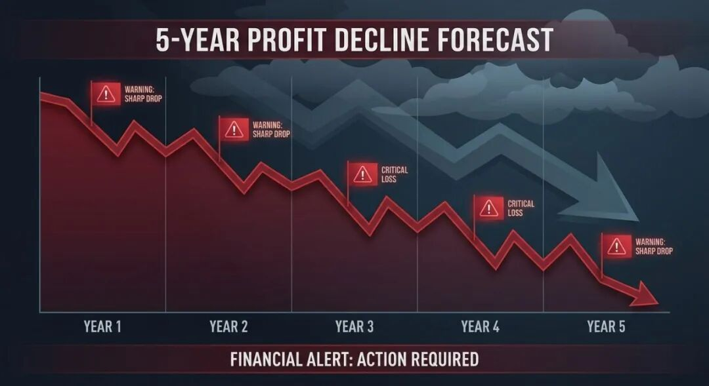
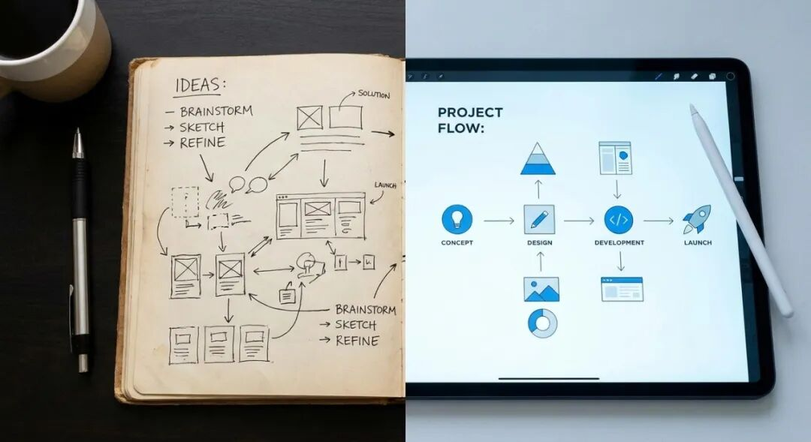

大概上周，微信群里有个老同学突然@我，说三房巷被 *ST 了，问我还记不记得这家公司。
说实话，一开始我没反应过来。翻了翻聊天记录才想起来——当年咱们一起上财报课的时候，好像确实扒过这家公司。当时啥结论来着？我竟然完全想不起来了。
就那一刻，我突然有点慌。
当年熬了多少夜、对着几百页年报抠数据、背指标阈值、算现金流肖像？那些日子，现在回想起来，比高考前那阵子都拼。结果学完之后呢？真要上手分析一家公司，找 5 年数据、算十几项指标、对标行业基准、整分析结论，一套下来大半天就没了。久而久之，学的干货慢慢就放着落灰了。
学了那么久，最后还是懒得用。
所以就有了今天这篇文章。
一、不是知识没用，是我们没给它找对省力的打开方式
当年学财报，是想拥有自己看懂一家公司、独立做判断、能在市场里排雷避险的能力
说实话，这个目标是达到了的。学完之后，对财务报表是敬畏的，知道里面埋着雷，知道哪些信号要警惕。这是真本事。
但学了用不起来，问题出在哪？
不是框架不对，是重复劳动的门槛太高。
每次分析都要重复找数据、算指标、核对标准——5 年的年报要扒、经营活动现金流要算、资产负债率要对标行业均值。这套流程走下来，没两三个小时根本拿不下来。普通人很难每次都完整走完，所以久而久之就不分析了，学的干货就这样放着落灰。
我后来想明白了一件事：我记在笔记本上的那些分析逻辑，每次都要手动核对，才是我懒得用的真正原因。
不是不会分析，是懒得动手。
所以我想了个办法——把笔记本上的分析步骤，拆解成固定的流程、量化的标准，让工具帮我做机械执行的部分，我只需要专注判断和决策。
二、我是怎么把笔记本里的财报知识，改成自己顺手的工具的
我没搞什么高大上的黑科技。只是把咱们当年一起啃下来的财报分析知识，改造成了一套能省掉重复劳动的分析流程。
第一步：把分析框架，原封不动拆成固定分析模块
我学的财报证伪逻辑，分三步走：
第一步：初步筛选—— 先过审计意见关，非标意见直接一票否决；再看商业逻辑有没有明显矛盾。
第二步：财务质量分析 —— 收入、成本、利润、财务结构，一个个指标按规则对。
第三步：能力评估 —— 偿债、资产、运营、现金流，评估公司能不能活下去、活得好不好。
没有加任何花里胡哨的东西，全是当年上课划的重点。只是把零散的知识点，整理成了环环相扣的固定流程。
第二步：把判断标准，整理成可落地的量化规则
笔记本上那些「红线」，我全部整理成了量化标准：
> 审计意见非标 → 直接终止分析，不用看后面的数字了
> 营收现金含量 < 100% → 触发预警
> 扣非净利润占比 < 80% → 触发预警
> 资产负债率 > 60% → 注意风险
> 经营现金流连续两年为负 → 最危险的信号
还补充了行业对标规则：咱们当年说要用申万行业前 25% 的优秀公司做基准，而不是泛泛的行业均值。这个我也整理进去了。
第三步：把手动重复的工作，交给工具自动完成
咱们手动做的事：扒年报数据、算指标、对标行业基准、写分析结论。机械性的工作，现在全部自动化了。
工具只是个执行者。判断规则、分析逻辑、核心框架，全是当年一起学的东西。没有这些，工具跑出来的就是一堆没用的数字。
三、实测落地——用这个框架，跑完三房巷 5 年完整财报分析
拿三房巷（600370.SH）做了实测。这家公司完美诠释了什么叫财报是用来排雷的。
划重点
第一道防线直接击穿：2025 年审计意见“无法表示意见”+ 内部控制“否定意见”，股票已被实施 *ST。
触发咱们当年说的「一票否决」规则——审计意见非标，直接终止分析，不用看后面的数字了。财报基础可信度为零，直接判定「不值得投资」。
如果当年用这套框架持续跟踪，2024 年审计师出具「带强调事项段的无保留意见」时就应该提高警惕；2025 年非标意见一出，直接避险，不用再看后面的故事。
排雷过程回溯（数据不会说谎）
收入端：2025 年收入大幅下滑 17.65%；关联方应收账款高达 35.6 亿元，占应收账款总额 94%，可收回性存疑。
利润端：毛利率从 2022 年的 5.72% 一路跌至 2025 年的 -1.91%，连续 3 年亏损且幅度持续扩大：

- 2023 年：-2.75 亿
- 2024 年：-4.87 亿
- 2025 年：-8.85 亿
现金流肖像：5 年中 3 年经营现金流为负，2023 年甚至出现「衰败型」（---）现金流。经营现金流连续两年为负是最危险的信号。这家公司，占齐了。
财务结构：资产负债率 69.88%，远超 60% 警戒线，也大幅高于行业中位数 36.69%。
流动比率 0.90、速动比率 0.67，偿债能力极弱。
你看，财报是用来排雷的，不是用来选股的。
2024 年带强调事项段的无保留意见出现时，就应该警铃大作；2025 年非标意见一出，不用再看后面的数字了。
四、给希望学习财报分析的朋友们
说几句掏心窝的话。你的知识体系，才是真正的核心竞争力
这次的尝试里，最值钱的不是工具，是咱们当年花了大把时间啃下来的财报分析逻辑。
没有这个底层框架，再先进的工具也出不来有价值的结论。工具只是执行者，真正的判断力，来自咱们当年一起熬夜学习的那些日子。
普通人不用追求复杂技术，只需要把学会的东西「标准化」
我们不用去学复杂的代码、不用搞懂 AI 的底层原理，只需要把自己反复要用的知识，拆解成固定的步骤、明确的标准，就能把零散的经验，变成能帮自己省力的工具。

如果你们也想试试，可以注册 Wind AI Agent
用我的邀请码 ：8H6Q4C，直接上手创建自己的分析 Skill，把你学会的分析框架做成顺手的工具。
学习从来不是终点，把知识用透，才是真正的学会
福利 1：评论区留下你最想分析的上市公司名字，我用这套框架，帮你跑出完整的财报证伪分析报告。目前关注不多，留言基本都能排到，放心许愿😄
福利 2：后台回复【财报框架】，可以领取我整理的这份分析框架的完整判断标准清单，你也可以拿去 Wind AI Agent 上做成自己的 Skill。
当年种下的知识，总有办法让它长出更顺手的果实。
期待和大家一起，把当年学的东西，用得越来越透。